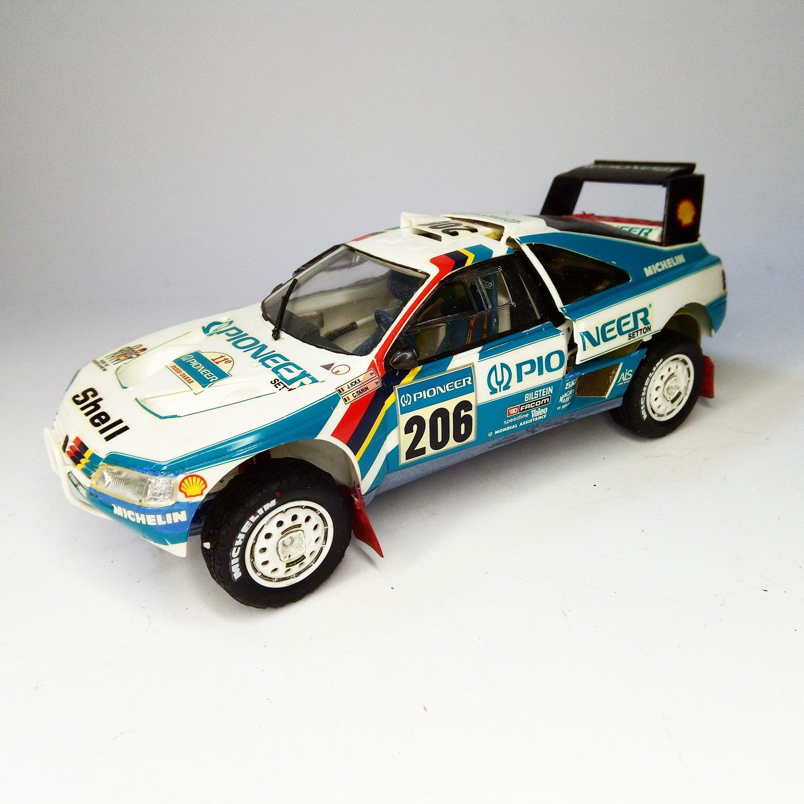
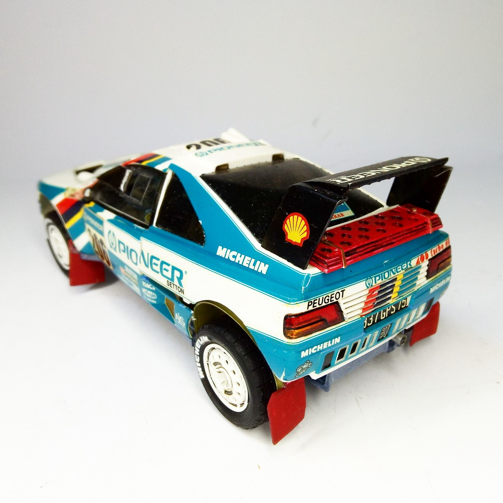

Auto e veicoli stradali · scale model archive
Peugeot 405T16GR
Peugeot 405T16GR — Kit: Tamiya, Scale: 1/24. 1989 Paris Dakar Winner #1/24 #Tamiya #Peugeot #405T

Photo gallery

English description
1989 Paris Dakar Winner
#1/24 #Tamiya #Peugeot #405T
Descrizione italiana
Vincitrice della Parigi-Dakar 1989.